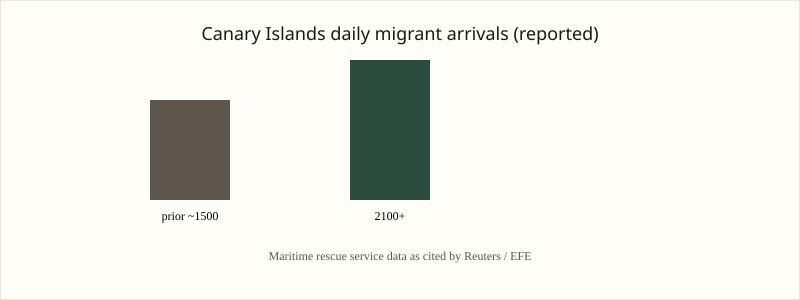

Canarias · migración · 25 noviembre 2026
Los servicios de salvamento registraron más de 2.100 llegadas de migrantes a Canarias en 24 horas, la mayoría en El Hierro.
.webp)
Lo que coinciden los medios
Según datos de Salvamento Marítimo y recuentos de EFE, más de 2.100 personas llegaron a las Islas Canarias en un periodo de 24 horas a mediados de noviembre de 2026, la mayoría a El Hierro. La cifra supera el récord previo de unos 1.500 registrado dos semanas antes. Una persona fue hallada muerta en una de las embarcaciones y otra dio a luz durante la travesía. La isla de El Hierro tiene unos 11.400 habitantes y es uno de los principales puntos de entrada desde África Occidental. Las llegadas del año hasta finales de noviembre se situaban en torno a 28.000, por encima del total de 2025 pero por debajo del máximo de 2024.
Lo que es solo cita
Las declaraciones del presidente Pedro Sánchez sobre refuerzo de controles con Senegal y Gambia y sobre la capacidad de acogida estructural de Canarias son posiciones del Gobierno. Las críticas del PP canario que califican la política de “matar” o “destrozar” la isla son valoraciones políticas. Ninguna de ellas sustituye los recuentos de rescate.
Mecanismo que el lector necesita
La ruta atlántica desde Senegal y Gambia hacia Canarias se activa especialmente en otoño, cuando el mar está más calmado. Los cayucos son embarcaciones de madera sobrecargadas. El Hierro, por su posición más occidental, recibe una parte desproporcionada de las llegadas. Los servicios de rescate, Cruz Roja y las infraestructuras locales de acogida se saturan cuando el volumen diario supera el millar. La coordinación con los países de origen incluye patrullas conjuntas y acuerdos de retorno; su efectividad se mide en la variación de las llegadas, no en las declaraciones. El recuento final de menores y mujeres se completa días después del desembarco.
Lo que esta historia no es
No es una predicción de que las llegadas seguirán aumentando. No es una cifra exacta de menores hasta que el censo de protección se cierre. No es una imagen de un cayuco concreto; la fotografía superior es un satélite de la isla.

Artículos fuente y puntuaciones
| Medio | Titular | T | N | C |
|---|---|---|---|---|
| Reuters | Migrant arrivals in Spain's Canary Islands break single-day record | 96 | 0 | 98 |
| EFE | Recuentos oficiales de llegadas a El Hierro | 95 | 0 | 98 |
| El Debate | El líder del PP canario critica la política inmigratoria de Sánchez | 90 | +15 | 70 |
Imágenes: Wikimedia Commons satélite de El Hierro vía Special:FilePath. onerror al SVG comprometido. Gráfico original. Sin atributo crossorigin.